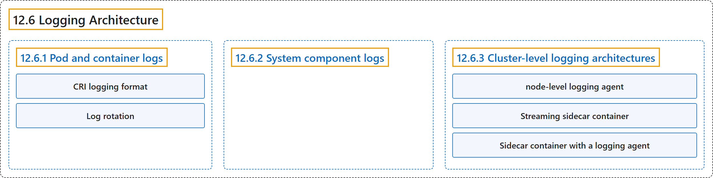

12.6 Logging Architecture
Classification

Glossary
| Term | Definition | 中文翻译 | Source |
|---|---|---|---|
| 12.6 Logging Architecture 日志架构 |
(context) "Application logs can help you understand what is happening inside your application." | （语境）应用日志可以帮助你了解应用内部正在发生什么。 | The Kubernetes Authors, n.d., "Logging Architecture", para. 1 |
| 12.6.1 Pod and container logs Pod 与容器日志 |
"Kubernetes captures logs from each container in a running Pod." | Kubernetes 捕获日志，来自运行中 Pod 里的每个容器。 | The Kubernetes Authors, n.d., "Pod and container logs", para. 1 |
| CRI logging format CRI 日志格式 |
(context) "Different container runtimes implement this in different ways; however, the integration with the kubelet is standardized as the CRI logging format." | （语境）不同的容器运行时以不同方式实现这一点；不过，与 kubelet 的集成都被标准化为 CRI 日志格式。 | The Kubernetes Authors, n.d., "How nodes handle container logs", para. 1 |
| Log rotation 日志轮转 |
"The kubelet is responsible for rotating container logs and managing the logging directory structure." | kubelet 负责轮转容器日志并管理日志目录结构。 | The Kubernetes Authors, n.d., "Log rotation", para. 1 |
| 12.6.2 System component logs 系统组件日志 |
"There are two types of system components: those that typically run in a container, and those components directly involved in running containers." | 有两类系统组件：通常运行在容器中的组件，以及直接参与运行容器的组件。 | The Kubernetes Authors, n.d., "System component logs", para. 1 |
| 12.6.3 Cluster-level logging architectures 集群级日志架构 |
"While Kubernetes does not provide a native solution for cluster-level logging, there are several common approaches you can consider." | 虽然 Kubernetes 没有为集群级日志提供原生方案，但有几种常见做法可供考虑。 | The Kubernetes Authors, n.d., "Cluster-level logging architectures", para. 1 |
| node-level logging agent 节点级日志代理 |
"You can implement cluster-level logging by including a node-level logging agent on each node." | 你可以实现集群级日志，方法是在每个节点上部署一个节点级日志代理。 | The Kubernetes Authors, n.d., "Using a node logging agent", para. 1 |
| Streaming sidecar container 流式边车容器 |
(context) "By having your sidecar containers write to their own stdout and stderr streams, you can take advantage of the kubelet and the logging agent that already run on each node." |
（语境）让边车容器写入它们自己的 stdout 和 stderr 流，你就可以利用 kubelet 和日志代理，它们已在每个节点上运行。 |
The Kubernetes Authors, n.d., "Streaming sidecar container", para. 1 |
| Sidecar container with a logging agent 带日志代理的边车容器 |
(context) "you can create a sidecar container with a separate logging agent that you have configured specifically to run with your application." | （语境）你可以创建一个边车容器，带有独立的日志代理，并专门配置它与你的应用一起运行。 | The Kubernetes Authors, n.d., "Sidecar container with a logging agent", para. 1 |
References
The Kubernetes Authors. (n.d.). Logging Architecture. Kubernetes Documentation. Retrieved October 31, 2026, from https://kubernetes.io/docs/concepts/cluster-administration/logging/